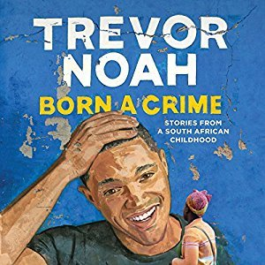

"Born a Crime: Stories From a South African Childhood"
- Read on 2019-05-14
- Rating: ️️️️️
- Format: 🎧 (8 hours 44 minutes)
This was really good. I enjoy autobiographies, and those for people still living (especially if they're relatively young) seem to cause me to think a bit more. Also, it has been quite a while since I've laughed out loud at a book as I did with this one. Although there doesn't feel like there's an overarching lesson to be learned from this book, his collection of experiences sure gives me plenty to think about. If you get the audio version of the book, it's especially good, since he reads it himself, and flawlessly imitates/demonstrates the various South African accents. This was also one of those books that was a bit vulgar, but seemed tolerable (if not understandable).
- Prior: Zero G
- Next: Where'd You Go, Bernadette
- Read on 2020-07-17
- Rating: ️️️️️
- Format: 🎧 (8 hours 44 minutes)
Second Review
I still really like this book. I listened to it with my wife, and she commented on the profanity, which is certainly there. Despite that, the experiences are well-told, largely entertaining, and surely interesting.
His audio performance is top notch - truly totally worth it.
With this being my second listen-through, I knew there wouldn't be an overarching message. Instead, I could sit back and enjoy how he brought in relevant details with each story, to make sure that when you arrived at the climax of a given story (or final punchline) you could enjoy the story to its fullest. Well done.
- Prior: The Great Train Robbery
- Next: Becoming